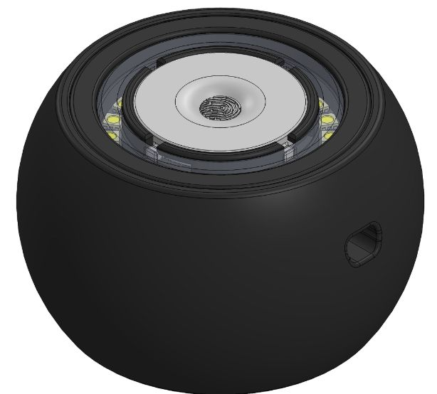
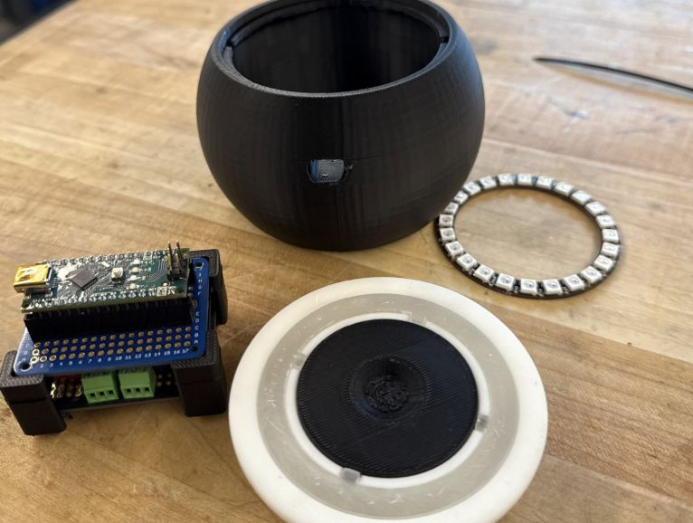

Focus Puck
A focus timer for the desk, engineered for modularity, simple assembly, and intuitive interaction.
Core Skills · SolidWorks · ANSYS FEA · DFMA · Rapid Prototyping · 3D Printing (Formlabs Form 4 + Bambu X1E) · Mechanical Packaging for Electronics

Overview
Over winter break I gave myself one rule: take a product from an idea in my head to a finished, working object, entirely my own from end to end. The result was Focus Puck, a single-purpose desk timer for focused work. The goal was a compact, desk-friendly enclosure that packaged the Arduino, sensors, and perfboard cleanly, with DFMA features throughout so I could print and iterate fast.
Design intent
The driving principle was that reaching for the timer should never become its own distraction, so the entire interaction lives in one spot: a fingerprint engraved over a capacitive touch sensor, read through three gestures and a ring of light. A tap wakes it, a tap-and-hold fills the ring two minutes per light, and a double tap starts the countdown. Inside, a modular stack of trays keeps the electronics rigid and serviceable, located on bosses in the shell, with heat-set inserts and counterbored rubber feet hiding every fastener so it reads as one clean object.
What I did
To keep all of that printable and serviceable, I leaned on DFMA throughout: a diffuser that twist-locks down on dovetail joints with no screws, and parts shaped around the print bed rather than fought onto it. I split the work across two machines on purpose, a Bambu X1E for fast, cheap iteration and a Formlabs Form 4 where surface finish and final fit mattered, then validated the shell with ANSYS FEA backed by physical drop tests.

Outcome
A modular, DFMA-optimized enclosure that's quick to iterate and quick to service, a repeatable two-machine manufacturing workflow, and a device that assembles start to finish in under two minutes.